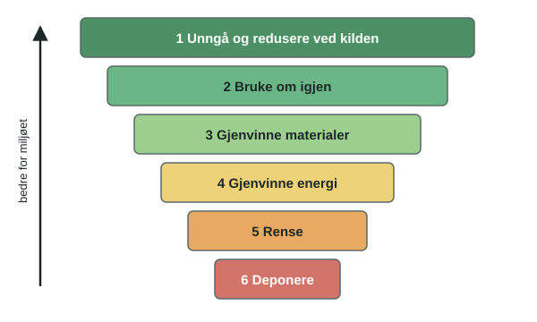

Tiltak: energi, gjenvinning og renere prosesser
Det finnes mange måter å gjøre en produksjon mer miljøvennlig på. Noen tiltak er enkle og billige, mens andre krever nye anlegg til flere milliarder kroner. Her lærer du de viktigste typene tiltak, og hvilke som bør komme først.
Tiltakstrappa
Ikke alle tiltak er like gode. Det er bedre å unngå et utslipp enn å rense det etterpå. Rensing koster energi og penger, og noe slipper alltid gjennom. Tiltakstrappa viser i hvilken rekkefølge bedriften bør tenke. Den bygger på samme idé som grønn kjemi: det er bedre å hindre problemet enn å rydde opp etterpå.

Spare energi
Energieffektivisering betyr å få gjort den samme jobben med mindre energi. Det er ofte det billigste miljøtiltaket, fordi bedriften også sparer penger på strømregningen. Eksempler:
- isolere rør og tanker, så mindre varme går tapt
- bruke pumper og vifter med turtallsregulering i stedet for å strupe med en ventil
- tette lekkasjer i trykkluft- og dampsystemet
- kjøre prosessen jevnt, for stans og oppstart bruker ekstra energi
Bruke spillvarmen
Mye av energien som går inn i et smelteverk, forsvinner som varme i ovnsgassen og kjølevannet. Med energigjenvinning blir denne varmen brukt på nytt:
- forvarme råstoff eller luft med en varmeveksler
- lage damp som driver en turbin og lager strøm
- levere varmt vann til fjernvarme, fiskeoppdrett eller veksthus i nærheten
Hvordan dette regnes ut, står på siden Energigjenvinning i Fysiske prinsipper.
Bruke om igjen og gjenvinne materialer
I en sirkulær økonomi blir materialene brukt så lenge som mulig, og det som blir til overs, blir råstoff til noe nytt. I prosessindustrien kan det for eksempel være:
- Støv fra filtrene blir samlet opp og ført tilbake til ovnen eller solgt.
- Slagg fra produksjon av ferromangan inneholder mye mangan. Det kan brukes som råstoff når det lages silikomangan. Annet slagg kan brukes i vei og betong.
- Metallskrap blir smeltet om. Det trengs mye mindre energi for å smelte om aluminium enn for å lage nytt aluminium fra malm.
Når én bedrift bruker en annen bedrifts biprodukter, damp eller spillvarme, kalles det industriell symbiose. Et kjent eksempel er industriparken i Kalundborg i Danmark, der kraftverk, raffineri og flere fabrikker deler vann, damp og biprodukter.
Bytte råstoff og energi
Prosessutslippene fra et smelteverk kommer fra karbonet som brukes som reduksjonsmiddel. Det kan kuttes ved å bytte til et annet reduksjonsmiddel:
- Biokarbon lages av trevirke som varmes opp uten luft. CO2-en fra biokarbon regnes som en del av naturens eget kretsløp, fordi nye trær tar opp like mye CO2 når de vokser. Silisiumverk bruker allerede trekull og flis i en del av blandingen, og manganverk prøver ut biokarbon i stedet for noe av koksen.
- Hydrogen kan ta oksygenet fra jernmalm, og da blir det vann i stedet for CO2. Det er prøvd ut for jern og stål. For mangan og silisium virker det ikke fullt ut, men hydrogen kan brukes til å forbehandle manganmalm.
Anlegg som bruker olje eller gass til oppvarming, kan i stedet bruke strøm fra fornybar energi. Det kalles elektrifisering.
Rense og fange
Når utslippet ikke kan unngås, må det renses. Støv fanges i posefiltre, og gasser fjernes i skrubbere. Prosessvann renses før det slippes ut. Mer om dette står på siden Utslipp og miljøprøver, og om utstyret på siden Syklon og støvfilter.
Også CO2 kan fanges. Ved karbonfangst og lagring skilles CO2 fra avgassen, og den blir pumpet ned i berggrunnen under havbunnen, der den blir liggende. Sementfabrikken i Brevik (Heidelberg Materials, tidligere Norcem) fanger omtrent halvparten av CO2-en sin. Den fraktes med skip og lagres under havbunnen i Nordsjøen. Karbonfangst bruker mye energi og er dyrt, så det brukes der det er vanskelig å kutte utslippene på andre måter.
Filtre, skrubbere og renseanlegg inneholder det som er fjernet fra avgassen og vannet: støv, tungmetaller, syrer eller baser. Før du åpner eller skifter filtre, må utstyret være stengt og sikret med lås og merk, og du må bruke det verneutstyret prosedyren sier, for eksempel åndedrettsvern.
Det du selv kan gjøre
Mange miljøtiltak handler om hvordan anlegget blir drevet hver dag:
- Kjør prosessen stabilt. Det gir mindre svinn og færre utslipp over grensene.
- Meld fra om lekkasjer, støv og unormal lukt med en gang.
- Følg med på at filtre og renseanlegg virker.
- Sorter avfallet riktig, også på laben.
- Kom med forslag til forbedringer. Mange av de beste idéene kommer fra dem som kjenner anlegget best. Les om kontinuerlig forbedring.
Test deg selv
1. Hvorfor er det bedre å unngå et utslipp enn å rense det?
- Rensing er forbudt
- Rensing koster energi og penger, og noe slipper alltid gjennom
- Det er ingen forskjell
Derfor står «unngå og redusere» øverst i tiltakstrappa, og rensing langt nede.
2. Hva er energieffektivisering?
- Å bruke mer energi for å lage mer
- Å få gjort den samme jobben med mindre energi
- Å bytte fra strøm til olje
For eksempel å isolere rør eller tette lekkasjer i trykkluftsystemet. Bedriften sparer da både energi og penger.
3. Et smelteverk leverer varmt kjølevann til et fiskeoppdrett i nærheten. Hva er dette et eksempel på?
- Karbonfangst
- Deponering
- Energigjenvinning og industriell symbiose
Spillvarmen blir brukt på nytt i stedet for å gå tapt, og en annen bedrift får nytte av den.
4. Hvordan kan biokarbon gi lavere utslipp fra et smelteverk?
- Biokarbon lager ikke CO2 når det reagerer
- Karbonet kommer fra trær, og nye trær tar opp like mye CO2 når de vokser
- Biokarbon gjør at ovnen trenger mindre strøm
Biokarbon lager CO2 akkurat som koks. Forskjellen er at det er karbon fra naturens kretsløp, ikke fossilt karbon. Det forutsetter at skogen vokser opp igjen.
5. Hva skjer ved karbonfangst og lagring?
- CO2 blir gjort om til oksygen
- CO2 skilles fra avgassen og pumpes ned i berggrunnen, der den blir liggende
- CO2 slippes ut høyt oppe, så den sprer seg
Karbonfangst hindrer at CO2 kommer ut i atmosfæren, men det bruker mye energi og er dyrt.
Ordliste
| Begrep | Forklaring | Engelsk |
|---|---|---|
| energieffektivisering | Å få gjort den samme jobben med mindre energi. | energy efficiency |
| energigjenvinning | Å bruke spillvarme eller annen overskuddsenergi på nytt i stedet for å slippe den ut. | energy recovery |
| sirkulær økonomi | En måte å drive på der materialer brukes så lenge som mulig, og det som blir til overs, blir råstoff til noe nytt. | |
| industriell symbiose | Samarbeid der én bedrift bruker en annen bedrifts biprodukter, damp eller spillvarme. | |
| biokarbon | Karbon laget av trevirke som er varmet opp uten luft. Kan brukes som reduksjonsmiddel i stedet for koks. | biocarbon |
| karbonfangst og lagring | Å skille CO2 fra avgassen og lagre den trygt i berggrunnen, så den ikke kommer ut i atmosfæren. | carbon capture and storage (CCS) |
| deponering | Å legge avfall som ikke kan brukes, trygt på et godkjent sted. |
Les mer
- Grønn kjemi i HMS.
- Energigjenvinning i Fysiske prinsipper.
Om kildene: Teksten, eksemplene og figurene på denne siden er laget for dette nettstedet. Siden bygger på undervisningsopplegg i kjemiprosess- og laboratoriefag ved Sauda vgs, som er utarbeidet med utgangspunkt i blant annet Kjemien stemmer, Laboranten og åpne nettkilder.